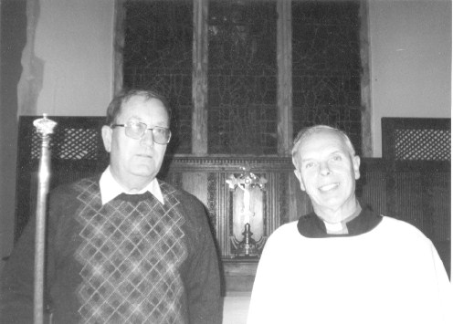

| 1100 |
A small Norman Church was built |
| 1380 |
The Church was rebuilt and a tower built |
| 1552 |
Item records "V bels in the steple" |
| 1612 |
The previous ring of 5 recast by Joseph Hatch, with a
tenor of 14cwt |
| 1847 |
Charles and George Mears cast a treble to increase the
ring to six. The local band rang several 720's of Treble Bob
on the bells, which are recorded on a board in the tower. |
| 1870's |
A major restoration of the Church destroyed a large
number of interesting mediaeval features. |
| 1880 |
The
Rev. R.B. Knatchbull Huggesen who was the Incumbent at Mersham
instigated the formation of the Kent County Association of
Changeringers and became the first General Secretary (resigning in 1889
upon being appointed to a living in Sussex - his successor as Secretary
being Rev E.W. Carpenter, who found the job too onerous, and was
suceeded in 1891 by Rev F.J.O. Helmore, a stalwart who held the job
until 1930). Two new trebles were
added at Mersham to increase the ring to eight. |
| 1884 |
"As a parting touch the local band rang 1316
changes of Grandsire Triples with the Rev R.B. Knatchbull Huggesen"
He left the parish and became incumbent elsewhere. Those who
rang in the touch are recorded on a board in the tower. |
| 1880-1920 |
The local band scored a number of peals of Bob Major
on the bells. On practices they could ring Kent T.B. Major and
Stedman and Grandsire Triples. A set of Belfry rules were drawn up. |
| 1924 |
The first peal in the tower by the RM & DG. |
| 1920-1945 |
One of the stalwarts of the local band and a founding
member of the Kent County Association of Changeringers, Mr E.S. Ruck
moved to Willesborough. There was no local band, but Mr Ruck
used to encourage the Willesborough ringers to ring for Sunday
Service at Mersham, though the bells were becoming increasingly
difficult to ring. They used to ring Bob Major and Grandsire Triples
for Sunday Service. This information was provided by Mr T.
Cullingworth who used to ring with this band. |
| 1945 |
The last peal before rehanging was rung on the bells,
Bob Minor. |
| mid 1950's |
The
bells were rung for H.M the Queen's visit to Mersham. Mr T.
Cullingworth was in the band. After this they were not rung again
until the restoration, although Mr J. Marsh, the esteemed Verger,
ensured that the bells were still chimed and kept alive the hope that
the bells would, one day, be restored. He lived well into his
90's and was Sexton & Verger at Mersham for over 70 years |
| 1968 |
The bells were taken to the Whitechapel Foundry and
tuned. The second bell vanished, never to be seen again, and a new bell had to be cast.
The canons were retained on the back 5, but then the bells were put
on Canon retaining headstocks, so that the Canons do not perform any
useful function. A new wooden frame was provided and the bells
rehung. The rehanging work was carried out by Mr Harry Parkes, who was
born in Mersham, and returned there following his retirement. Details of the new weights. |
| 2000 |
The Romney Marsh and District Guild began to provide
ringers on practices and Sundays. This encouraged the other
local learners to continue, and the Tower Captain and his wife to
extend practices to an hour in length. |
| 2001 |
A quarter peal taken from Holts Original was
successfuly completed being the first quarter peal for 20 years for
the Tower Captain, Mr M. Osborne and his wife, Mrs M. Osborne.
It was rung to mark the 250th Anniversary of the first peal of Holts
Original, and as a 14th birthday compliment to Miss V. Gates Van-Dijcke.
The tower was also bird-proofed and much nesting material
cleared. The ropes were spliced. On 7th July a peal of
Holts Original was attempted for the Guild on the day of the 250th
Anniversary of the first peal, but came to grief due to the
indisposition of one or two members of that band.

Michael Osborne (Churchwarden and Tower Captain) with Rev. J. Tipping (Priest-in-charge)
|
| 2004 |
1st January - The RM & DG scored a peal of Bob Major at Mersham to mark the centenary of the first peal by the Guild,
rung at New Romney on Oct 28th 1903. See the 'Performances' tab for the full band order.
|
| 2009 |
New band in training, with a Thursday practice night. |
{kind=link}
{kind=link}
{kind=link}
{kind=link}
{kind=link}
{kind=link}